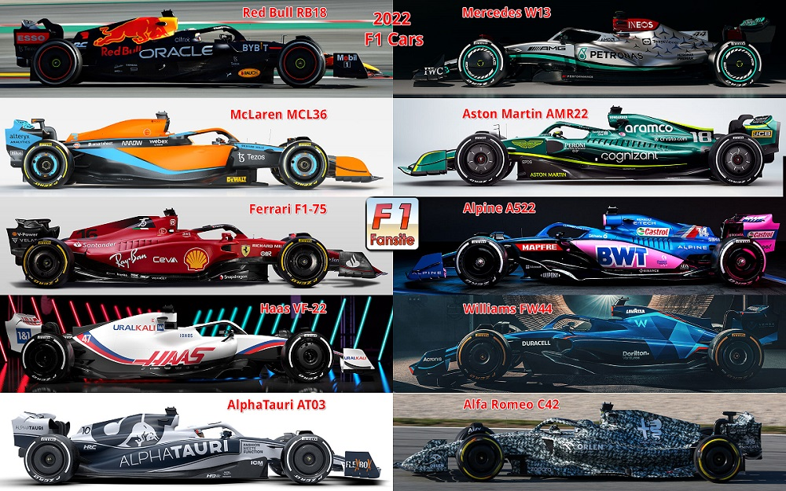

Equipos

Los equipos de Fórmula 1 son los participantes clave en el Campeonato Mundial de Fórmula 1. Cada equipo tiene una serie de funciones y responsabilidades en el deporte, que incluyen:
Diseño y Construcción del Monoplaza: Los equipos de Fórmula 1 son responsables del diseño, desarrollo y construcción de sus monoplazas de carreras. Estos monoplazas son vehículos de alta tecnología y alto rendimiento, construidos para cumplir con las regulaciones técnicas de la FIA (Federación Internacional del Automóvil).
Desarrollo Técnico: Los equipos dedican mucho tiempo y recursos a la investigación y desarrollo técnico para mejorar el rendimiento de sus monoplazas. Esto implica trabajar en aerodinámica, sistemas de suspensión, motores, electrónica y otros aspectos cruciales del diseño del coche.
Estrategia de Carrera: Los equipos tienen estrategas y analistas que desarrollan tácticas y estrategias para cada carrera. Esto incluye decisiones sobre neumáticos, paradas en boxes, configuración del coche y otros factores que pueden afectar el resultado de la carrera.
Pit Stops: Durante la carrera, los equipos realizan pit stops, donde cambian neumáticos y realizan ajustes rápidos en el monoplaza. Los pit stops son un elemento esencial de la estrategia de carrera y pueden marcar una gran diferencia en el resultado final.
Gestión de Pilotos: Los equipos trabajan en estrecha colaboración con sus pilotos, brindándoles apoyo técnico, físico y mental. Los ingenieros y especialistas ayudan a los pilotos a mejorar su rendimiento y a adaptarse al coche y a las condiciones de cada circuito.
Gestión de Pilotos: Los equipos trabajan en estrecha colaboración con sus pilotos, brindándoles apoyo técnico, físico y mental. Los ingenieros y especialistas ayudan a los pilotos a mejorar su rendimiento y a adaptarse al coche y a las condiciones de cada circuito.